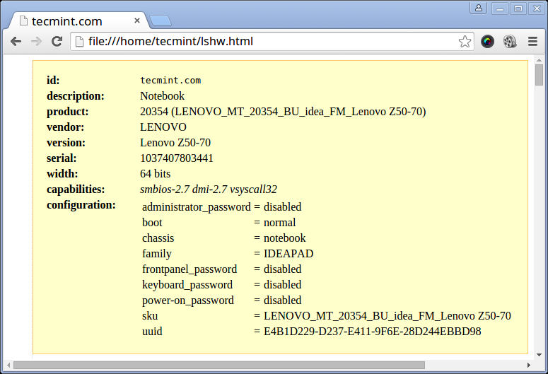

采集系统和硬件信息的10个命令
原文地址: https://www.tecmint.com/commands-to-collect-system-and-hardware-information-in-linux/
了解你运行中的Linux系统的硬件组件是一个很好的习惯，这可以帮助你去处理安装软件包或驱动程序时遇到的兼容性问题。 因此在此篇文章中，我们将看到一些实用的命令，可以帮助你提取有关Linux系统和硬件组件的信息。
1. 如何查看Linux系统信息
如果仅是查看系统名称，可以直接使用uname命令，不需要任何选项，或使用uname -s命令打印系统的内核名称。
tecmint@tecmint ~ $ uname
Linux
要查看网络主机名，使用uname命令的-n选项，如下所示。
tecmint@tecmint ~ $ uname -n
tecmint.com
要获取关于内核版本的信息，使用-v选项。
tecmint@tecmint ~ $ uname -v
#64-Ubuntu SMP Mon Sep 22 21:28:38 UTC 2014
要获取内核发行版本的信息，使用-r选项。
tecmint@tecmint ~ $ uname -r
3.13.0-37-generic
打印主机硬件平台的类型，使用-m选项。
tecmint@tecmint ~ $ uname -m
x86_64
以上所有信息可以使用uname -a命令一次打印出来，如下所示。
tecmint@tecmint ~ $ uname -a
Linux tecmint.com 3.13.0-37-generic #64-Ubuntu SMP Mon Sep 22 21:28:38 UTC 2014 x86_64 x86_64 x86_64 GNU/Linux
2. 如何查看Linux系统硬件信息
在这你可以使用lshw工具去收集大部分硬件组件信息，如cpu, 磁盘， 内存， usb控制器等信息。
lshw是一个相对小型的工具，它有一些选项是你在提取信息的时候可以使用的。 这些信息是lshw从不同的/proc文件中收集的。
注意: 记住lshw命令是通过超级用户(root)或者sudo用户来执行的。
运行这个命令来打印Linux系统硬件信息:
tecmint@tecmint ~ $ sudo lshw
tecmint.com
description: Notebook
product: 20354 (LENOVO_MT_20354_BU_idea_FM_Lenovo Z50-70)
vendor: LENOVO
version: Lenovo Z50-70
serial: 1037407803441
width: 64 bits
capabilities: smbios-2.7 dmi-2.7 vsyscall32
configuration: administrator_password=disabled boot=normal chassis=notebook family=IDEAPAD frontpanel_password=disabled keyboard_password=disabled power-on_password=disabled sku=LENOVO_MT_20354_BU_idea_FM_Lenovo Z50-70 uuid=E4B1D229-D237-E411-9F6E-28D244EBBD98
*-core
description: Motherboard
product: Lancer 5A5
vendor: LENOVO
physical id: 0
version: 31900059WIN
serial: YB06377069
slot: Type2 - Board Chassis Location
*-firmware
description: BIOS
vendor: LENOVO
physical id: 0
version: 9BCN26WW
date: 07/31/2014
size: 128KiB
capacity: 4032KiB
capabilities: pci upgrade shadowing cdboot bootselect edd int13floppynec int13floppytoshiba int13floppy360 int13floppy1200 int13floppy720 int13floppy2880 int9keyboard int10video acpi usb biosbootspecification uefi
......
你可以通过-short选项来打印一个硬件信息的总结。
tecmint@tecmint ~ $ sudo lshw -short
H/W path Device Class Description
=====================================================
system 20354 (LENOVO_MT_20354_BU_idea_FM_Lenovo Z50-70)
/0 bus Lancer 5A5
/0/0 memory 128KiB BIOS
/0/4 processor Intel(R) Core(TM) i5-4210U CPU @ 1.70GHz
/0/4/b memory 32KiB L1 cache
/0/4/c memory 256KiB L2 cache
/0/4/d memory 3MiB L3 cache
/0/a memory 32KiB L1 cache
/0/12 memory 8GiB System Memory
/0/12/0 memory DIMM [empty]
/0/12/1 memory DIMM [empty]
/0/12/2 memory 8GiB SODIMM DDR3 Synchronous 1600 MHz (0.6 ns)
/0/12/3 memory DIMM [empty]
/0/100 bridge Haswell-ULT DRAM Controller
/0/100/2 display Haswell-ULT Integrated Graphics Controller
/0/100/3 multimedia Haswell-ULT HD Audio Controller
...
如果你想生成一个输出作为html文件，你可以使用-html选项。
tecmint@tecmint ~ $ sudo lshw -html > lshw.html

3. 如何显示CPU信息
要显示CPU的信息，使用lscpu命令，它会显示出你CPU的架构信息，如CPU的数量，cores，CPU系列型号，CPU的缓存，线程等，这些信息都是lscpu命令从sysfs和/proc/cpuinfo获取的。
tecmint@tecmint ~ $ lscpu
Architecture: x86_64
CPU op-mode(s): 32-bit, 64-bit
Byte Order: Little Endian
CPU(s): 4
On-line CPU(s) list: 0-3
Thread(s) per core: 2
Core(s) per socket: 2
Socket(s): 1
NUMA node(s): 1
Vendor ID: GenuineIntel
CPU family: 6
Model: 69
Stepping: 1
CPU MHz: 768.000
BogoMIPS: 4788.72
Virtualization: VT-x
L1d cache: 32K
L1i cache: 32K
L2 cache: 256K
L3 cache: 3072K
NUMA node0 CPU(s): 0-3
4. 如何收集Linux块设备信息
块设备是存储设备，如硬盘，闪存等。 lsblk命令是用于生成块设备报告的命令，如下：
tecmint@tecmint ~ $ lsblk
NAME MAJ:MIN RM SIZE RO TYPE MOUNTPOINT
sda 8:0 0 931.5G 0 disk
├─sda1 8:1 0 1000M 0 part
├─sda2 8:2 0 260M 0 part /boot/efi
├─sda3 8:3 0 1000M 0 part
├─sda4 8:4 0 128M 0 part
├─sda5 8:5 0 557.1G 0 part
├─sda6 8:6 0 25G 0 part
├─sda7 8:7 0 14.7G 0 part
├─sda8 8:8 0 1M 0 part
├─sda9 8:9 0 324.5G 0 part /
└─sda10 8:10 0 7.9G 0 part [SWAP]
sr0 11:0 1 1024M 0 rom
如果你想查看所有你系统中的块设备，使用-a选项。
tecmint@tecmint ~ $ lsblk -a
NAME MAJ:MIN RM SIZE RO TYPE MOUNTPOINT
sda 8:0 0 931.5G 0 disk
├─sda1 8:1 0 1000M 0 part
├─sda2 8:2 0 260M 0 part /boot/efi
├─sda3 8:3 0 1000M 0 part
├─sda4 8:4 0 128M 0 part
├─sda5 8:5 0 557.1G 0 part
├─sda6 8:6 0 25G 0 part
├─sda7 8:7 0 14.7G 0 part
├─sda8 8:8 0 1M 0 part
├─sda9 8:9 0 324.5G 0 part /
└─sda10 8:10 0 7.9G 0 part [SWAP]
sdb 8:16 1 0 disk
sr0 11:0 1 1024M 0 rom
ram0 1:0 0 64M 0 disk
ram1 1:1 0 64M 0 disk
ram2 1:2 0 64M 0 disk
ram3 1:3 0 64M 0 disk
ram4 1:4 0 64M 0 disk
ram5 1:5 0 64M 0 disk
ram6 1:6 0 64M 0 disk
ram7 1:7 0 64M 0 disk
ram8 1:8 0 64M 0 disk
ram9 1:9 0 64M 0 disk
loop0 7:0 0 0 loop
loop1 7:1 0 0 loop
loop2 7:2 0 0 loop
loop3 7:3 0 0 loop
loop4 7:4 0 0 loop
loop5 7:5 0 0 loop
loop6 7:6 0 0 loop
loop7 7:7 0 0 loop
ram10 1:10 0 64M 0 disk
ram11 1:11 0 64M 0 disk
ram12 1:12 0 64M 0 disk
ram13 1:13 0 64M 0 disk
ram14 1:14 0 64M 0 disk
ram15 1:15 0 64M 0 disk
5. 如何打印USB控制器的信息
lsusb命令可以生成USB控制器及所有连接到控制设备的信息报告。
tecmint@tecmint ~ $ lsusb
Bus 001 Device 002: ID 8087:8000 Intel Corp.
Bus 001 Device 001: ID 1d6b:0002 Linux Foundation 2.0 root hub
Bus 003 Device 001: ID 1d6b:0003 Linux Foundation 3.0 root hub
Bus 002 Device 005: ID 0bda:b728 Realtek Semiconductor Corp.
Bus 002 Device 004: ID 5986:0249 Acer, Inc
Bus 002 Device 003: ID 0bda:0129 Realtek Semiconductor Corp. RTS5129 Card Reader Controller
Bus 002 Device 002: ID 045e:00cb Microsoft Corp. Basic Optical Mouse v2.0
Bus 002 Device 001: ID 1d6b:0002 Linux Foundation 2.0 root hub
你还可以使用-v选项来生成每个USB设备的详细信息。
tecmint@tecmint ~ $ lsusb -v
6. 如何打印PCI设备的信息
PCI设备可能包括usb端口，显卡，网络适配器等。 lspci工具用于生成关于所有安装在系统上的设备及连接他们的设备的PCI控制器的信息。
运行以下命令打印关于PCI设备的信息。
tecmint@tecmint ~ $ lspci
00:00.0 Host bridge: Intel Corporation Haswell-ULT DRAM Controller (rev 0b)
00:02.0 VGA compatible controller: Intel Corporation Haswell-ULT Integrated Graphics Controller (rev 0b)
00:03.0 Audio device: Intel Corporation Haswell-ULT HD Audio Controller (rev 0b)
00:14.0 USB controller: Intel Corporation Lynx Point-LP USB xHCI HC (rev 04)
00:16.0 Communication controller: Intel Corporation Lynx Point-LP HECI #0 (rev 04)
00:1b.0 Audio device: Intel Corporation Lynx Point-LP HD Audio Controller (rev 04)
00:1c.0 PCI bridge: Intel Corporation Lynx Point-LP PCI Express Root Port 3 (rev e4)
00:1c.3 PCI bridge: Intel Corporation Lynx Point-LP PCI Express Root Port 4 (rev e4)
00:1c.4 PCI bridge: Intel Corporation Lynx Point-LP PCI Express Root Port 5 (rev e4)
00:1d.0 USB controller: Intel Corporation Lynx Point-LP USB EHCI #1 (rev 04)
00:1f.0 ISA bridge: Intel Corporation Lynx Point-LP LPC Controller (rev 04)
00:1f.2 SATA controller: Intel Corporation Lynx Point-LP SATA Controller 1 [AHCI mode] (rev 04)
00:1f.3 SMBus: Intel Corporation Lynx Point-LP SMBus Controller (rev 04)
01:00.0 Ethernet controller: Realtek Semiconductor Co., Ltd. RTL8111/8168/8411 PCI Express Gigabit Ethernet Controller (rev 10)
02:00.0 Network controller: Realtek Semiconductor Co., Ltd. RTL8723BE PCIe Wireless Network Adapter
03:00.0 3D controller: NVIDIA Corporation GM108M [GeForce 840M] (rev a2)
使用-t参数产生一个树形格式的输出。
tecmint@tecmint ~ $ lspci -t
-[0000:00]-+-00.0
+-02.0
+-03.0
+-14.0
+-16.0
+-1b.0
+-1c.0-[01]----00.0
+-1c.3-[02]----00.0
+-1c.4-[03]----00.0
+-1d.0
+-1f.0
+-1f.2
\-1f.3
使用-v参数产生每个连接设备的详细信息。
tecmint@tecmint ~ $ lspci -v
00:00.0 Host bridge: Intel Corporation Haswell-ULT DRAM Controller (rev 0b)
Subsystem: Lenovo Device 3978
Flags: bus master, fast devsel, latency 0
Capabilities:
00:02.0 VGA compatible controller: Intel Corporation Haswell-ULT Integrated Graphics Controller (rev 0b) (prog-if 00 [VGA controller])
Subsystem: Lenovo Device 380d
Flags: bus master, fast devsel, latency 0, IRQ 62
Memory at c3000000 (64-bit, non-prefetchable) [size=4M]
Memory at d0000000 (64-bit, prefetchable) [size=256M]
I/O ports at 6000 [size=64]
Expansion ROM at [disabled]
Capabilities:
Kernel driver in use: i915
.....
7. 如何打印SCSI设备的信息
使用lsscsi命令显示所有scsi/sata设备。如果系统中没有安装此命令，运行如下命令来安装它。
$ sudo apt-get install lsscsi [on Debian derivatives]
# yum install lsscsi [On RedHat based systems]
# dnf install lsscsi [On Fedora 21+ Onwards]
安装之后，像如下所示来运行lsscsi命令:
tecmint@tecmint ~ $ lsscsi
[0:0:0:0] disk ATA ST1000LM024 HN-M 2BA3 /dev/sda
[1:0:0:0] cd/dvd PLDS DVD-RW DA8A5SH RL61 /dev/sr0
[4:0:0:0] disk Generic- xD/SD/M.S. 1.00 /dev/sdb
使用-s参数显示设备容量。
tecmint@tecmint ~ $ lsscsi -s
[0:0:0:0] disk ATA ST1000LM024 HN-M 2BA3 /dev/sda 1.00TB
[1:0:0:0] cd/dvd PLDS DVD-RW DA8A5SH RL61 /dev/sr0 -
[4:0:0:0] disk Generic- xD/SD/M.S. 1.00 /dev/sdb -
8. 如何打印关于SATA设备的信息
如下所示，使用hdparm工具可以找到你系统中sata设备的一些信息。 在下面这个例子中， 我们用了系统中块设备/dev/sda1。
tecmint@tecmint ~ $ sudo hdparm /dev/sda1
/dev/sda1:
multcount = 0 (off)
IO_support = 1 (32-bit)
readonly = 0 (off)
readahead = 256 (on)
geometry = 56065/255/63, sectors = 2048000, start = 2048
要打印关于设备的柱面，磁头，扇区，大小和设备的起始偏移信息等，使用-g参数。
tecmint@tecmint ~ $ sudo hdparm -g /dev/sda1
/dev/sda1:
geometry = 56065/255/63, sectors = 2048000, start = 2048
9. 如何打印Linux文件系统的信息
使用fdisk命令来获取文件系统的分区信息。 尽管fdisk命令的主要功能是修改文件系统分区，但它也可以用于去显示在系统中不同分区的信息。
tecmint@tecmint ~ $ sudo fdisk -l
WARNING: GPT (GUID Partition Table) detected on '/dev/sda'! The util fdisk doesn't support GPT. Use GNU Parted.
Disk /dev/sda: 1000.2 GB, 1000204886016 bytes
255 heads, 63 sectors/track, 121601 cylinders, total 1953525168 sectors
Units = sectors of 1 * 512 = 512 bytes
Sector size (logical/physical): 512 bytes / 4096 bytes
I/O size (minimum/optimal): 4096 bytes / 4096 bytes
Disk identifier: 0xcee8ad92
Device Boot Start End Blocks Id System
/dev/sda1 1 1953525167 976762583+ ee GPT
Partition 1 does not start on physical sector boundary.
10. 如何提取硬件组件的信息
你可以使用dmidecode_程序通过从DMI表中读取数据来提取硬件信息。
要打印关于内存信息，运行以下命令，并且要以超级管理员的权限运行。
tecmint@tecmint ~ $ sudo dmidecode -t memory
# dmidecode 2.12
# SMBIOS entry point at 0xaaebef98
SMBIOS 2.7 present.
Handle 0x0005, DMI type 5, 24 bytes
Memory Controller Information
Error Detecting Method: None
Error Correcting Capabilities:
None
Supported Interleave: One-way Interleave
Current Interleave: One-way Interleave
Maximum Memory Module Size: 8192 MB
Maximum Total Memory Size: 32768 MB
Supported Speeds:
Other
Supported Memory Types:
Other
Memory Module Voltage: Unknown
Associated Memory Slots: 4
0x0006
0x0007
0x0008
0x0009
Enabled Error Correcting Capabilities:
None
...
运行以下命令打印系统相关信息。
tecmint@tecmint ~ $ sudo dmidecode -t system
# dmidecode 2.12
# SMBIOS entry point at 0xaaebef98
SMBIOS 2.7 present.
Handle 0x0001, DMI type 1, 27 bytes
System Information
Manufacturer: LENOVO
Product Name: 20354
Version: Lenovo Z50-70
Serial Number: 1037407803441
UUID: 29D2B1E4-37D2-11E4-9F6E-28D244EBBD98
Wake-up Type: Power Switch
SKU Number: LENOVO_MT_20354_BU_idea_FM_Lenovo Z50-70
Family: IDEAPAD
...
运行以下命令打印BIOS相关信息。
tecmint@tecmint ~ $ sudo dmidecode -t bios
# dmidecode 2.12
# SMBIOS entry point at 0xaaebef98
SMBIOS 2.7 present.
Handle 0x0000, DMI type 0, 24 bytes
BIOS Information
Vendor: LENOVO
Version: 9BCN26WW
Release Date: 07/31/2014
Address: 0xE0000
Runtime Size: 128 kB
ROM Size: 4096 kB
Characteristics:
PCI is supported
BIOS is upgradeable
BIOS shadowing is allowed
Boot from CD is supported
Selectable boot is supported
EDD is supported
Japanese floppy for NEC 9800 1.2 MB is supported (int 13h)
Japanese floppy for Toshiba 1.2 MB is supported (int 13h)
5.25"/360 kB floppy services are supported (int 13h)
5.25"/1.2 MB floppy services are supported (int 13h)
3.5"/720 kB floppy services are supported (int 13h)
3.5"/2.88 MB floppy services are supported (int 13h)
8042 keyboard services are supported (int 9h)
CGA/mono video services are supported (int 10h)
ACPI is supported
USB legacy is supported
BIOS boot specification is supported
Targeted content distribution is supported
UEFI is supported
BIOS Revision: 0.26
Firmware Revision: 0.26
...
运行以下命令打印关于处理器的信息。
tecmint@tecmint ~ $ sudo dmidecode -t processor
# dmidecode 2.12
# SMBIOS entry point at 0xaaebef98
SMBIOS 2.7 present.
Handle 0x0004, DMI type 4, 42 bytes
Processor Information
Socket Designation: U3E1
Type: Central Processor
Family: Core i5
Manufacturer: Intel(R) Corporation
ID: 51 06 04 00 FF FB EB BF
Signature: Type 0, Family 6, Model 69, Stepping 1
Flags:
...
总结
除了以上的命令，还有很多方法可以来获取系统硬件组件信息。 大部分的命令是从/proc目录下的文件来提取的系统信息。